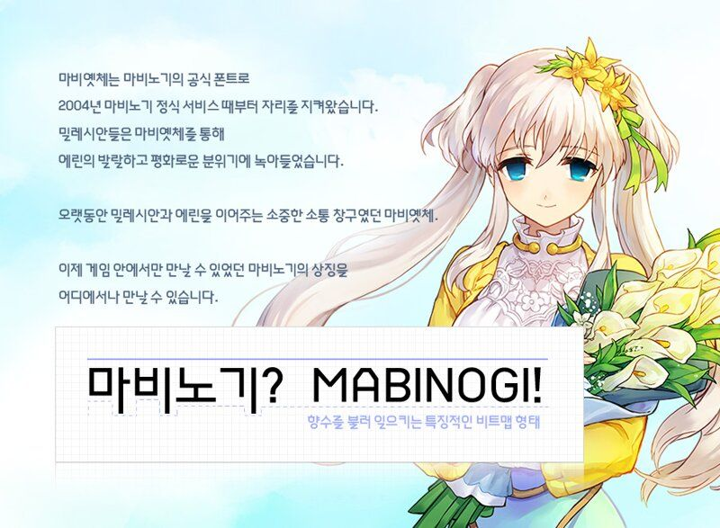
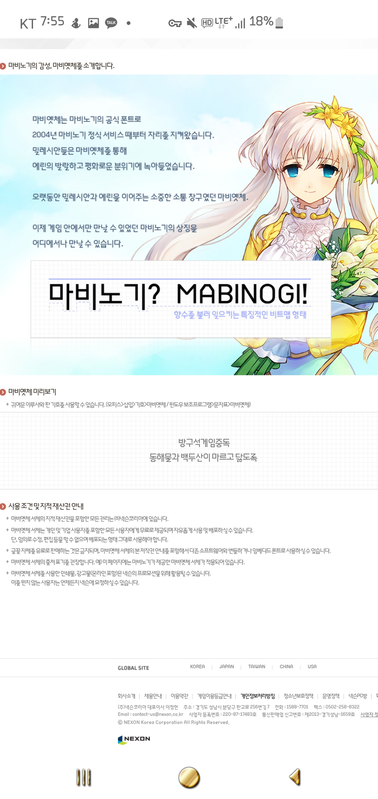
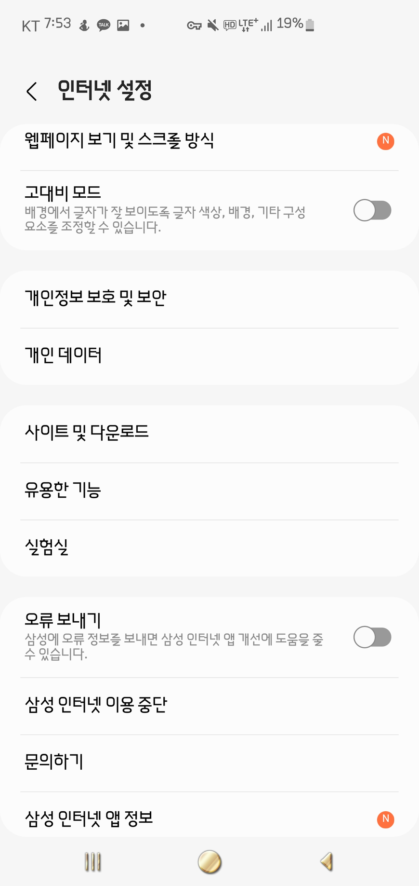
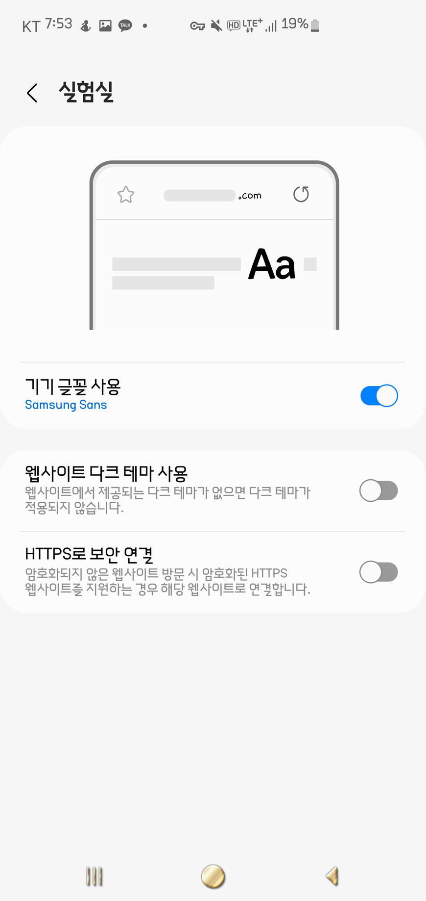
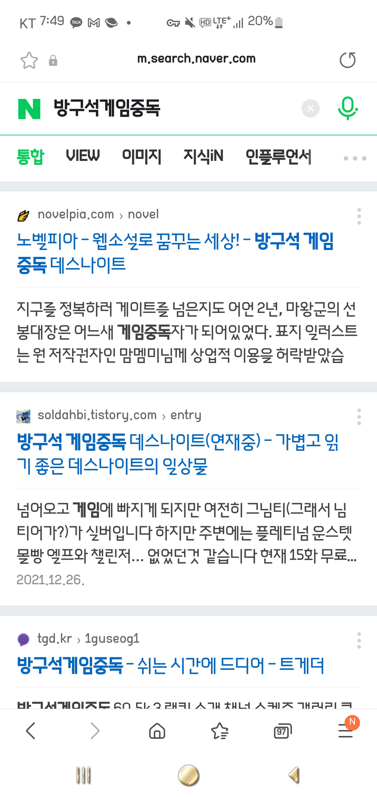
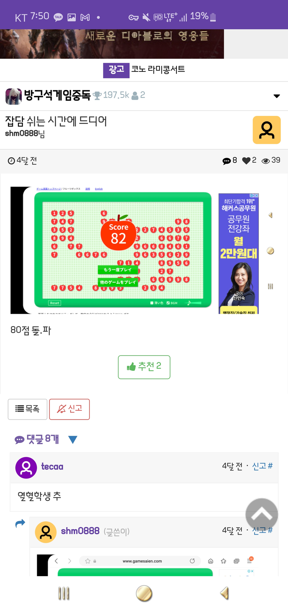

마비노기는 독특하게 게임 내 출력되는 글씨체가 폰트로 존재하는 게임이 아니었습니다.

게임 출시가 2004년이고 이후로 지금까지 약 18년간 유저들이 폰트 만들어서 내달라고 요구했는데 이제서야 만들어져 배포 시작합니다.

폰트 배포 링크
폰트 적용 방법
https://extrememanual.net/36316
위 링크대로 적용 후에


실험실에서 글꼴을 켜주면 됩니다.


적용 완료된 모습입니다.
유튜브 앱에도 적용이 같이 됩니다! 멋집니다.
참고) 이 모든 것은 아이폰에는 적용이 불가합니다. 인싸는 폰 보지말고 밖에 나가서 놀기나 하십쇼.
후원댓글 13개
댓글 13개 ▼